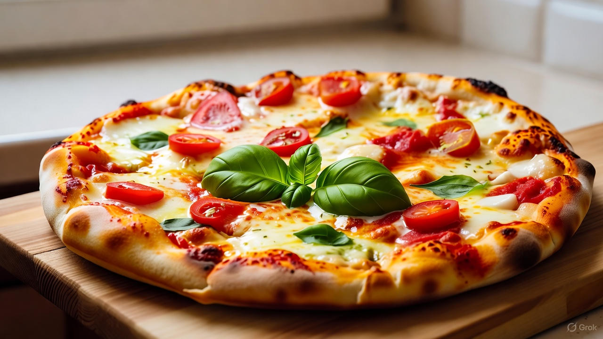

Home
Classic Margherita Pizza

Description:
A simple yet flavorful Italian-style pizza topped with fresh mozzarella,
ripe tomatoes, and fragrant basil leaves. This thin-crust Margherita pizza
combines crispy dough, creamy cheese, and a hint of olive oil — the
perfect balance of freshness and tradition.
Ingredients:
- 2 ½ cups all-purpose flour
- 1 teaspoon salt
- 1 teaspoon sugar
- 1 packet (7g) active dry yeast
- ¾ cup warm water
- 2 tablespoons olive oil
- ½ cup tomato sauce (or crushed tomatoes)
- 200g fresh mozzarella cheese, sliced
- Fresh basil leaves
- 1 tablespoon olive oil (for drizzling)
- Optional: pinch of oregano or black pepper
Instructions:
-
In a small bowl, dissolve yeast and sugar in warm water. Let it sit for
10 minutes until frothy.
-
In a large bowl, mix flour and salt. Add the yeast mixture and olive
oil, then knead until you get a smooth dough.
-
Cover the dough and let it rise for 1 hour, or until it doubles in size.
- Preheat the oven to 475°F (250°C).
- Roll out the dough on a floured surface into a thin round shape.
- Transfer the dough to a baking sheet or pizza stone.
- Spread tomato sauce evenly over the dough.
- Add mozzarella slices and fresh basil leaves on top.
-
Drizzle with olive oil and sprinkle oregano or black pepper if desired.
-
Bake for 10–12 minutes until the crust is golden and the cheese is
bubbling.
- Slice and serve hot.